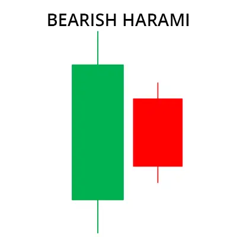
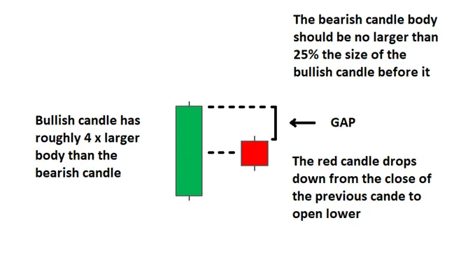
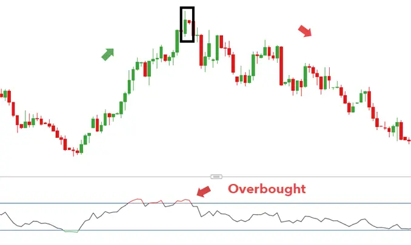
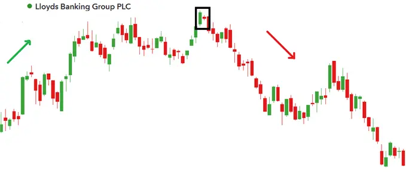
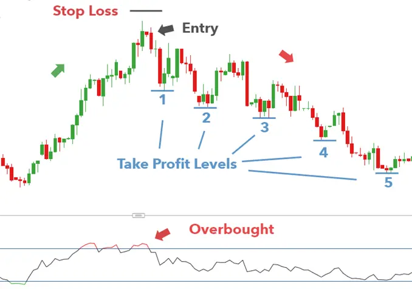
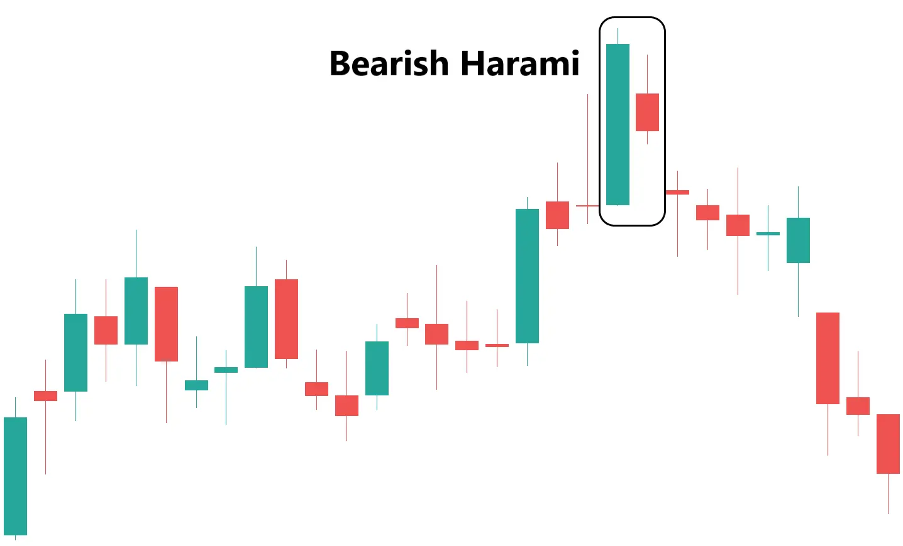

बियरिश हरामी पैटर्न एक उपट्रेंड के शीर्ष पर दिखने वाला उलट वापसी पैटर्न है। इसमें एक बलिष्ठ विकर्षक संधि होती है, जिसे एक छोटे बैशिक संधि से आवृत्त किया जाता है, जो पूर्वी मोमबत्ती के शरीर के भीतर समाप्त होती है। एक बदलती पैमाने की ओर संकेत के रूप में, छोटी बैशिक मोमबत्ती पिछली मोमबत्ती के मध्य वर्तमान में खोलती है।

बुलिश हरामी बियरिश हरामी के विपरीत होता है और एक डाउनट्रेंड के नीचे पाया जाता है।
| HOW TO IDENTIFY A BEARISH HARAMI ON TRADING CHARTS |
Identify existing uptrend.
| Formation of the Bearish Harami Pattern in the Forex market |
फॉरेक्स मार्केट 24/5 आधार पर काम करता है, जिसका मतलब है कि जब एक कैंडल बंद होता है, तो अगला कैंडल लगभग पिछली कैंडल के बंद होने की कीमत पर ही खुलता है। यह आम बाजारी स्थितियों में देखा जाता है, लेकिन उच्च उतार-चढ़ाव के दौरान यह बदल सकता है। फॉरेक्स में बियरिश हरामी पैटर्न अक्सर इस तरह का दिखता है:

छोटी लाल मोमबत्ती पहली बड़ी बलिश मोमबत्ती के बंद होने के स्तर के करीब या उसी स्तर पर खुलती है। यह आमतौर पर फॉरेक्स मार्केट में देखा जाता है।
| Formation of the Bearish Harami Pattern in Stocks |
दूसरी ओर, स्टॉक दिन के निश्चित व्यापारिक घंटों के दौरान ट्रेड होते हैं और कई कारणों से खुलते ही गैप नीचे देखे जाते हैं। कुछ कारण हो सकते हैं:
इसलिए, अधिक पारंपरिक हरामी पैटर्न नजर आता है, जैसा कि नीचे दिखाया गया है FTSE 100 स्टॉक, ल्लॉयड्स बैंकिंग ग्रुप पीएलसी के लिए:

तब ध्यान दें कि चार्ट पर कई ऐसे क्षेत्र होते हैं जहां बाजार गैप करता हुआ दिखता है - जिसमें कैंडल्स के बीच खुले स्थान होते हैं। यह अक्सर स्टॉक मार्केट में देखा जाता है।
| HOW TO TRADE THE BEARISH HARAMI CANDLESTICK PATTERN |
ट्रेडर्स बुलिश हरामी 5-स्टेप चेकलिस्ट का अनुसरण कर सकते हैं जो इस आलेख में पहले बताया गया है। पहले बताए गए USD/SGD चार्ट को देखते हुए हम निम्नलिखित देख सकते हैं:
स्टॉप नए उच्च स्तर से ऊपर रखे जा सकते हैं और ट्रेडर्स बियरिश हरामी पैटर्न के पूर्ण होने के बाद के कैंडल के ओपनिंग में शामिल हो सकते हैं। बियरिश हरामी एक संभावित डाउनट्रेंड की शुरुआत में पाए जाने के कारण, ट्रेडर्स नए विस्तृत डाउनट्रेंड को झोले में ले जाने के लिए कई लक्ष्य स्तरों को शामिल कर सकते हैं।

